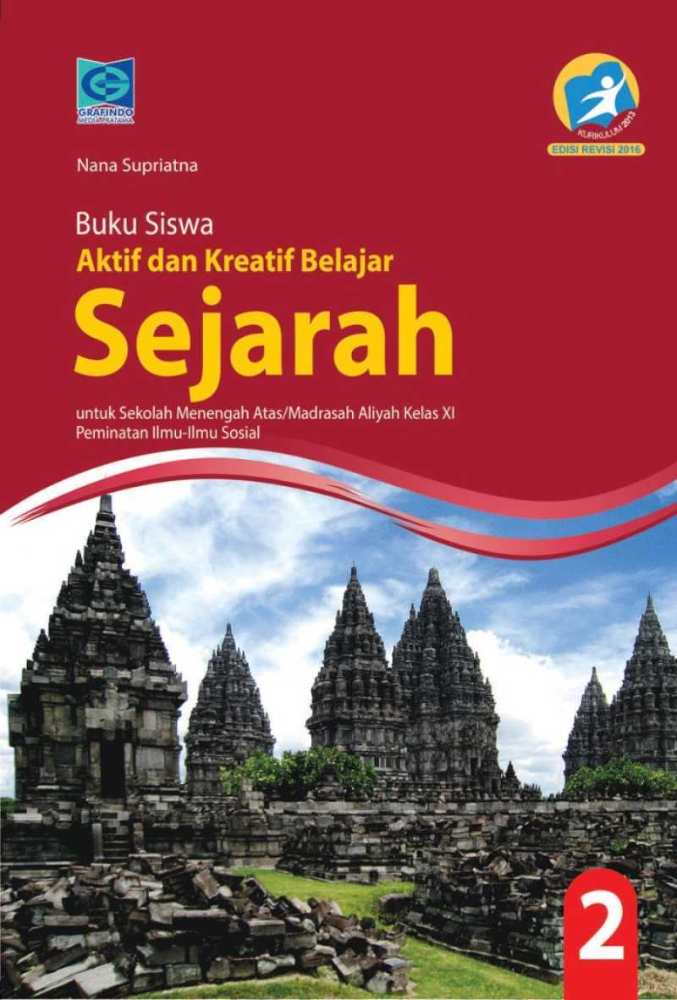
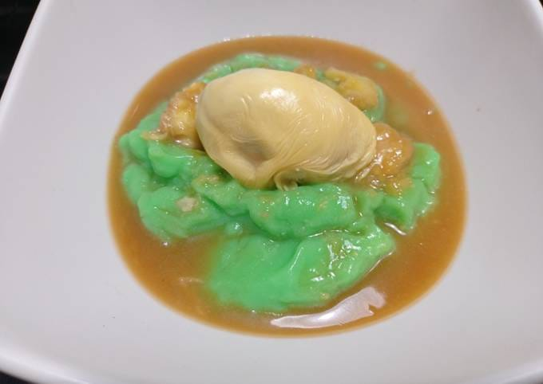

Hobi
Saya suka berenang karena rasanya segar dan menenangkan saat berada di dalam air. Berenang juga bikin seluruh tubuh bergerak, jadi olahraga yang menyenangkan sekaligus menyehatkan. Apalagi, bisa jadi cara yang seru buat melepaskan stres dan menikmati waktu di bawah matahari!
Favorite Lesson
Saya suka pelajaran sejarah karena setiap cerita di dalamnya seperti membuka jendela ke masa lalu. Kita bisa memahami bagaimana peristiwa besar terjadi dan bagaimana orang-orang di masa lalu berpikir. Selain itu, sejarah bikin kita lebih menghargai perjalanan waktu dan bagaimana kita sampai di titik ini.
Favorite Food
Saya suka bubur sumsum dan kolak durian karena keduanya punya rasa manis dan lembut yang memanjakan lidah. Bubur sumsumnya halus dan gurih, sementara kolak durian punya aroma khas dan rasa yang kaya. Kombinasi ini bikin suasana jadi lebih hangat dan menyenangkan!